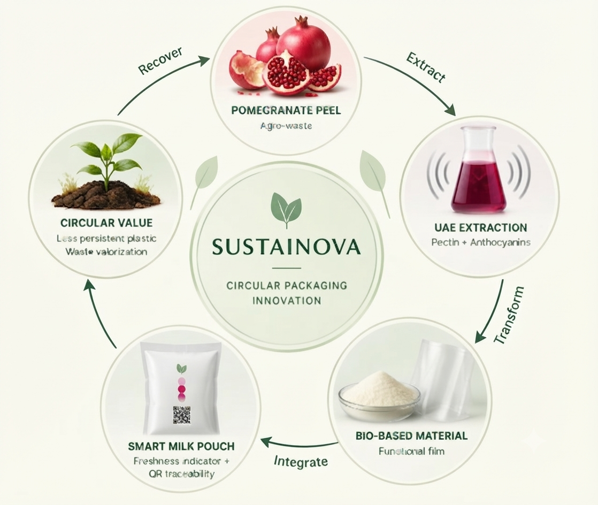
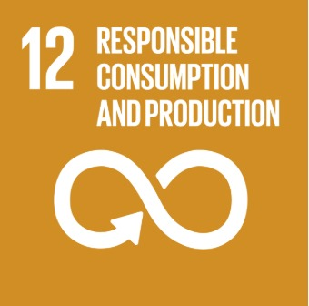
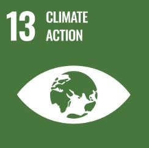
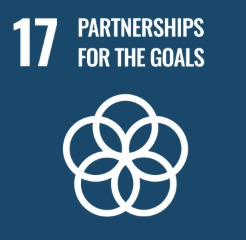

A better pouch for a better everyday ritual. SmartFresh pairs a biodegradable milk pack with a natural colour-changing freshness indicator — then lets your phone read the story.
✦Designed for everyday confidence Not a replacement for safe handling or sensory checks.
SMARTFRESH / 250 ml01
Milk is fresh
DEEP PURPLE / READY
✦
0%
target persistent plastic
scroll to explore
GOOD FOR YOU✳BETTER FOR EARTH✳FRESHNESS YOU CAN SEE✳GOOD FOR YOU✳BETTER FOR EARTH✳FRESHNESS YOU CAN SEE✳
THE PROBLEM
A packaging system out of balance.
Every day, millions of milk pouches are used and discarded, creating persistent plastic waste. Valuable agricultural by-products, like pomegranate peel, are also underutilized. We built Sustainova to change that.
◫
~50 billion
plastic milk pouches used annually in India
⌫
150–200 kt
plastic waste from milk pouches generated every year in India
◔
Decades–centuries
time taken for conventional persistent plastic pouches to degrade
◌
Millions of tonnes
of pomegranate peel waste generated annually, with limited utilization
"Every milk pouch should not come at the cost of our planet — or our resources."
Sustainova transforms agricultural waste into intelligent, biodegradable milk packaging.
Pomegranate peel, often treated as agro-industrial waste, becomes the starting point for a new generation of intelligent food packaging. Sustainova closes the loop by recovering valuable compounds and transforming them into functional, biodegradable and intelligent milk packaging.
♻
Recover
Pomegranate peel collected from fruit-processing streams.
Bio-based materials developed into a functional packaging film.
◉
Intelligently Pack
Freshness indicator + QR traceability create a smarter milk pouch.
✦
Responsible End-of-Life
Bio-based packaging designed for a more responsible material cycle.
WHY SUSTAINOVA?
Bio-based. Intelligent. Future-ready.
What makes Sustainova a responsible and impactful packaging solution.
♜
Agro-Waste Valorization
Utilizes pomegranate peel, an underutilized agro-industrial by-product, to create valuable packaging materials.
◎
Advanced Extraction Technology
Ultrasound-assisted extraction recovers pectin and natural anthocyanins for functional, high-value use.
◫
Bio-based Packaging Material
Pectin-based film designed for food packaging with suitable strength and barrier performance.
◑
Intelligent Freshness Indication
Anthocyanin-based natural colour change indicates milk freshness in real time.
▣
Digital Traceability
QR-enabled system provides product information and freshness details for informed consumption.
♻
Designed for Circularity
A bio-based alternative to conventional plastic, with biodegradability and reduced dependence on persistent plastic materials.
THE SMARTFRESH DIFFERENCE
One pouch. Two kinds of care.
We are rethinking the milk pack from the material it is made of to the information it gives back. SmartFresh connects a physical colour response to a clear digital decision.
01 / MATERIAL
✦
A pouch with a softer footprint.
Our concept explores a biodegradable film based on PVA + Pectin + Xanthan Gum — an alternative direction to persistent LDPE packaging.
biodegradable concept↗
02 / INDICATOR
Colour is the first conversation.
Deep purple is fresh — the milk is within its best quality window, properly cold, and ready to use. Pink / magenta means the indicator is shifting as the milk starts to age, so it should be checked soon and used with care. Red is the clear sign that the milk has deteriorated significantly and should not be consumed.
natural colour-changing freshness indicator↗
03 / DIGITAL LAYER
ANALYSING COLOUR
See it. Scan it. Know it.
Scan the QR code, capture the indicator, and let image analysis translate an experimental colour category into a consumer-friendly status.
scan → capture → analyse → understand↗
SMARTFRESH DIGITAL LAYER
Turn a colour into confidence.
This is a working prototype of the image-analysis experience. Pick a calibrated colour or upload an indicator image to see how the interface interprets it.
COLOUR ANALYSIS / PROTOTYPECALIBRATION SET · 04 / SMARTFRESH—01
INPUT 01 / CAMERA
Show us the indicator.
READY
NATURAL PIGMENTIMAGE → COLOUR
SF
↥
Drop an image hereor click to upload from your device
Photograph only the indicator in natural light for a clearer read.
no image stored · local prototype
LIVE IMAGE INPUT01
OR TRY A CALIBRATED SAMPLE
OUTPUT 01 / INTERPRETATION0.2 SEC
READING
COLOUR EXTRACTCALIBRATED STATUS
YOUR SMARTFRESH READING
Fresh
The indicator is in the deep bluish-purple range. The pack is reading as fresh in this prototype calibration.
INDICATOR BANDDEEP PURPLE
RECOMMENDEDSAFE TO USE
COLOUR MATCH96%
✦
Remember: SmartFresh is an information layer. Keep milk chilled, check the seal, and use your senses before consuming.
DATA NOTE
This prototype compares extracted colour against experimentally established categories — it is not a food-safety certification.
READ THE SCIENCE ↗
YOUR POUCH PASSPORT
Every pack has a story.
Scan the pouch QR code to connect its physical identity to a simple record. For this SIH prototype, try the sample batch below.
SCAN TO CONNECTsmartfresh / pouch passport
SMARTFRESH / PASSPORT✳
DEMO BATCH
SF26—0918—PN01
local dairy pilot · Pune region
TRACEABLE BY DESIGNSDG 12 / 2026
ABOUT US
Redefining Milk Packaging for a Sustainable Future.
Sustainova is a materials-driven sustainable packaging innovation focused on rethinking conventional milk packaging through the convergence of circular bioeconomy, functional biopolymers, intelligent sensing, and digital traceability.
Our platform transforms pomegranate peel — an underutilized agro-industrial by-product — into functional packaging resources, recovering pectin and natural anthocyanins through ultrasound-assisted extraction.
These bio-derived components are integrated into a functional film architecture designed for milk packaging, while an anthocyanin-based sensing layer introduces a new dimension: packaging that can communicate freshness.
“
We wanted to make responsible consumption feel natural, not complicated.
Sustainova team vision
THE CIRCULAR ECONOMY PRINCIPLE
It's all about Circular Economy.
Sustainova transforms pomegranate peel waste into intelligent, biodegradable milk packaging. By closing the loop, what is discarded today becomes a valuable resource tomorrow.
RecoverPomegranate peel waste collected from fruit processing streams
TransformExtracted into pectin and natural anthocyanins using green extraction methods
RecreateEngineered into intelligent, biodegradable milk packaging
ReturnDesigned for responsible end-of-life, completing the circular cycle

OUR IMPACT
Small material. A bigger tomorrow.
Sustainova transforms pomegranate peel waste into intelligent, biodegradable milk packaging — helping reduce plastic dependence and creating value from what is otherwise discarded.
Projection Plan
From prototype validation to pilot deployment and scalable adoption — Sustainova’s roadmap is built around measurable milestones.
2027⚗
Pilot-ready prototype
Food-contact, migration, mechanical, barrier and biodegradation validation.
2028◼
10 lakh pouches/year
Pilot-scale production and dairy-partner trials.
2030◾
1 crore+ pouches/year
Commercial scale-up across dairy processors.
91 t/year♾
Potential plastic replacement
At projected 1 crore 250 ml pouches/year, subject to final material mass and LCA validation.
VALIDATE→PILOT→SCALE→IMPACT
♾
ALIGNED WITH UNITED NATIONS SDGs
Sustainable Development Goals
Sustainova’s work is aligned with SDG 12 (Responsible Consumption and Production), SDG 13 (Climate Action), and SDG 17 (Partnerships for the Goals).

SDG 12 — Responsible Consumption & Production
Reduces persistent plastic dependence through bio-based packaging and empowers consumers with real-time freshness information to minimize food waste.

SDG 13 — Climate Action
Valorizing agricultural waste and replacing carbon-intensive LDPE with bio-derived materials contributes to reducing greenhouse gas emissions across the packaging lifecycle.

SDG 17 — Partnerships for the Goals
Brings together agriculture, food science, materials engineering, and digital technology to build scalable, collaborative solutions for sustainable packaging.
MENTORS & ADVISOR
Guided by experience.
The SmartFresh project is shaped by deep academic expertise in food technology, materials science, and engineering.
PROJECT MENTOR
Dr. Anjali A. Bhoite
School of Food Technology (SOFT) MIT ADT University
Providing expert guidance on food packaging materials, biopolymer formulation, and functional film development for the SmartFresh concept.
PROJECT EXPERT
Dr. Chidanand Jadar
School of Engineering (SOE) MIT ADT University
Providing technical expertise in engineering systems, extraction technology, and digital integration for intelligent packaging solutions.
CONTACT
Let’s build something better.
Interested in Sustainova? Whether you are a dairy partner, sustainability researcher, investor, or just curious — we would love to hear from you.